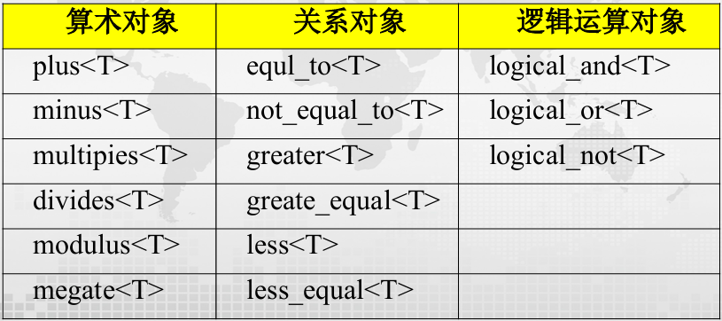
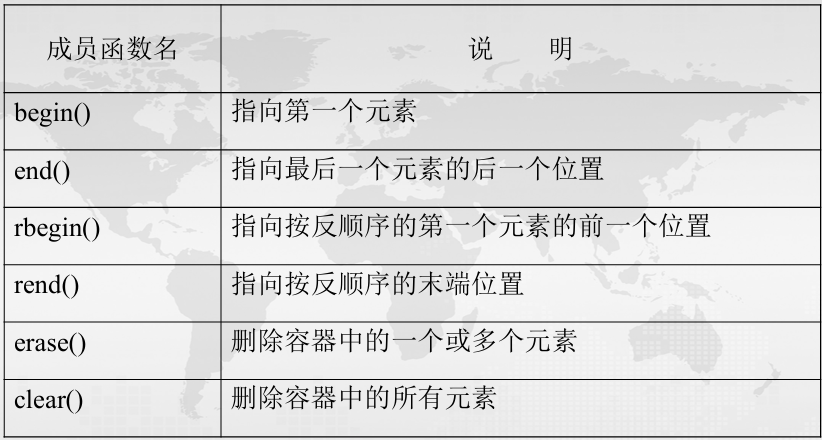
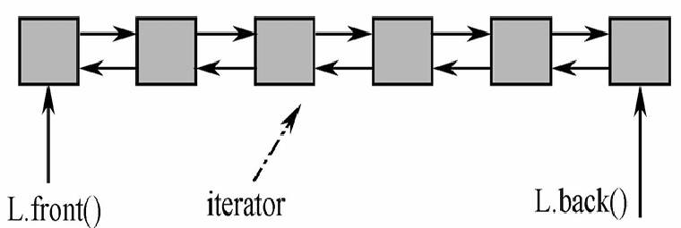

Mid
6.5 STL
STL全称Standard Template Library，即为标准模板库，本质上是一些容器、算法等组件的集合。
$~$
函数对象：
STL为每个算术运算和关系运算都定义了一个对应的运算模板类，称为函数对象，定义在<function>头文件中。

使用方法如下：
plus<int> iadd;
int s=iadd(2,3); //s=5
minus<double> dminus;
double d=dminus(25,5); //d=20.0
less<int> iless;
if(iless(5,7)) cout<<"5<7"; //输出：5<7
int a[]={1,3,-2,0};
sort(a,a+4,greater<int>()); //降序排序：3,1,0,-2
$~$
容器（container）：
容器是用来存储其他对象的对象。
- 顺序容器（sequence container）： 向量（vector）、链表（list）、双端队列（deque）
- 关联容器（associative container）： 集合（set）、多重集合（multiset）
- 容器适配器（container adapter）： 堆栈（stack）、队列（queue）、优先队列（priority queue）
STL中的容器及头文件名：

所有容器都具有的成员函数：

顺序容器和关联容器共同支持的成员函数：

$~$
vector:
vector在插入或删除数据时，能自动扩展和压缩大小；可以用类似数组的[]来访问指定元素，但其与数组相比更加灵活，因为其大小动态可变。

$~$
list:
list是双向链表，只支持顺序访问。链表节点的访问常常通过迭代器进行。

链表构造：
list<T> c; //创建空链表c
list<T> c1(c2); //用c2的值创建c1
list<T> c(n); //创建有n个元素的链表c，元素值由默认构造函数产生
list<T> c(n,e); //创建有n个元素的链表c，每个元素都是e
list<T> c(iter_left,iter_right);//创建链表c，并用另一容器一定范围内的元素（迭代器形式，左闭右开）初始化
链表赋值：
c1=c2; //将c2的全部元素赋给c1
c.assign(n,e); //将元素e拷贝n次赋给c
c.assign(iter_left,iter_right); //将另一容器一定范围内的元素（迭代器形式，左闭右开）赋给c
c1.swap(c2); //将c1和c2的元素互换
Note
这里的赋值是完全覆盖原本的内容，相当于销毁原来的再变成新的。
链表存取：
链表增删：
c.insert(p,e); //在迭代器p所指元素前面插入e
c.insert(p,n,e); //在迭代器p所指元素前面插入n个e
c.insert(p,iter_left,iter_right); //在迭代器p所知元素前面插入另一容器一定范围内的元素（迭代器形式，左闭右开）
c.push_back(e); //末尾添加e
c.push_front(e); //开头添加e
c.pop_back(); //删除末尾元素
c.pop_front(); //删除开头元素
c.remove(v); //删掉所有值为v的元素
c.remove_if(op); //删掉所有谓词op为false的元素
c.erase(p); //删掉迭代器p所指元素
c.erase(iter_left,iter_right); //删掉迭代器范围内的元素（左闭右开）
c.resize(n); //若n比当前尺寸大，则补0；否则截断
c.clear(); //清空
特殊操作：
c.unique(); //删除相邻重复元素，只留一个
c.unique(op); //删除相邻使谓词op为true的元素，只留第一个
c1.splice(p,c2); //将c2所有元素插到c1的迭代器p指向元素之前，c2清空
c1.splice(c1_p,c2,c2_p); //将c2中c2_p指向元素插到c1中c1_p所指元素之前
c1.splice(p,c2,c2_ileft,c2_iright); //将c2迭代器范围内元素插到c1的迭代器p指向元素之前
c.sort(); //升序排序
c.sort(op); //根据谓词op排序
c1.merge(c2); //c1与c2合并，二者必须有序，c2变为空
c.reverse(); //反序
$~$
stack：
可以用list或vector实现stack。
push()：入栈pop()：出栈top()：返回栈顶元素值，但不像pop()那样删除元素
$~$
queue和priority_queue：
queue同样也有和stack类似的push、pop、top函数。区别在于，queue的push发生在队尾，pop和top发生在队头。
priority_queue和queue的区别在于，其队头元素总是最大的——即执行pop操作时，删除的总是最大的元素；执行top操作时，返回的是最大元素的引用。priority_queue的实现通常使用堆排序，但其内部并非完全有序。
$~$
string:
string是一种特殊类型的容器，因为其既可以作为字符类型的容器，本身又可以视作字符串这一类型。
s.substr(n1,n); //从n1下标开始，取出n个字符作为新的字符串
s1.swap(s2); //交换字符串内容
s.size(); s.length(); //字符串长度，不计'\0'（因为string没有）
s.capacity(); //不再分配内存的情况下，字符串可用长度，一般比size长（字符串会预留额外空间来优化内存管理）
s.max_size(); //不断分配内存后字符串可达到的最大长度
s1.find(s2); //s1中找s2子串，返回第一次出现的索引
s1.rfind(s2); //从后往前找，但注意索引还是s2字串的开头
s1.find_first_of(s2); //s1中找第一个属于s2的字符，返回索引
s1.find_last_of(s2); //s1中找最后一个属于s2的字符，返回索引
s1.replace(n1,n,s2); //从s1的n1下标开始的n个字符被替换成s2
s1.replace(n1,n,s2,n2,m); //从s1的n1下标开始的n个字符被替换成从s2的n2下标开始的m个字符
s1.insert(n,s2); //在下标n之前插入s2
s1.insert(n1,n,s2,n2,m); //在s1的n1之前插入s2从下标n2开始的m个字符
string与char*有所区别，string不需要结束符\0，而char*需要，因此不能将string直接赋值给char*。
将string转换成const char*，需要使用string的data()成员函数；将char*赋值给string，可用string的copy()成员函数。
string s1="ABCDEFGH";
const char* cs1;
cs1=s1.data(); //data函数只适用于赋值给const char*
char* cs2;
int len=s1.length();
cs2=new char[len+1];
s1.copy(cs2,len,0);
cs2[len]=0; //cs2最后需要加上`\0`
$~$
迭代器（iterator）：
迭代器是一个对象，常用于遍历容器取得元素，可以理解成一个更强大的指针。
主要操作：
*：获得当前位置的元素值++：前进到下一位置--：回退到前一位置==/!==：赋值begin()：指向容器第一个元素位置end()：指向容器最后一个元素的后一个位置rbegin()：指向容器最后一个元素位置rend()：指向容器第一个元素的前一个位置
$~$
pair和tuple:
pair只能有两个元素，tuple可以有多个元素，且tuple的元素可以是其他容器。
tuple的构造：
tuple<T1,T2,...,Tn> t; //默认构造函数
tuple<T1,T2,...,Tn> t(v1,v2,...,vn); //使用指定值初始化（实际调用的是构造函数，可以隐式转换）
tuple<T1,T2,...,Tn> t{v1,v2,...,vn}; //使用值列表初始化（实际调用的是列表初始化，无法隐式转换）
tuple<T1,T2,...,Tn> t={v1,v2,...,vn}; //错误用法，tuple的构造函数是explicit的
auto t=make_tuple(v1,v2,...,vn); //使用指定值初始化。等价于第二种写法
tuple的访问：
$~$
关联容器：
关联容器中的每个元素都有一个键和一个值，set的键就是值，map的键和值分开形成映射。
关联容器的元素按键值顺序排列，实现结构为红黑树或者哈希表。
$~$
set和multiset:
set和multiset类似，它和multiset的差别在于set中不能有重复的元素。multiset的成员函数set中也都有。
不能直接修改set中的元素，因为元素被修改后，容器并不会自动重新调整顺序，于是容器的有序性就会被破坏。正确的做法是删除原元素，然后插入修改后的新元素。
set/multiset的定义：
set c; //创建空集合
set c(op); //创建空集合，指定排序规则，op可以是less<>（从小到大）或greater<>（从大到小）之一，应用时要在<>写上类型，如less<int>，默认排序方式为less<>
set c1(c2); //用c2的值创建c1
set c(begin,end); //用迭代器范围内的元素创建集合c
set/multiset的容量计算：
set/multiset的常用操作：
c.count(e); //返回集合中值为e的元素个数
c.find(e); //返回集合中第一个值为e的元素的迭代器
c.lower_bound(e); //返回集合中第一个值大于等于e的元素的迭代器
c.upper_bound(e); //返回集合中第一个值大于e的元素的迭代器
c.insert(e); //插入元素e
insert(pos,e); //在迭代器pos所指元素之前插入元素e，但实际上pos只是一个提示迭代器，最终还是会按照顺序优化
c.insert(begin,end); //将迭代器范围内的元素插入集合
c.erase(e); //删除集合中所有值为e的元素
c.erase(pos); //删除迭代器pos所指元素
c.erase(begin,end); //删除迭代器范围内的元素
c.clear(); //清空集合
c.begin(); //返回集合中第一个元素的迭代器
c.end(); //返回集合中最后一个元素的后一个迭代器
$~$
map和multimap:
map和multimap的区别在于map不允许多个值对应同一个键，而multimap允许。
同样地，不能直接修改map和multimap中的键。
map和multimap的元素都是pair对象。
map和multimap提供了两个数据成员：
first：用于访问键second：用于访问值